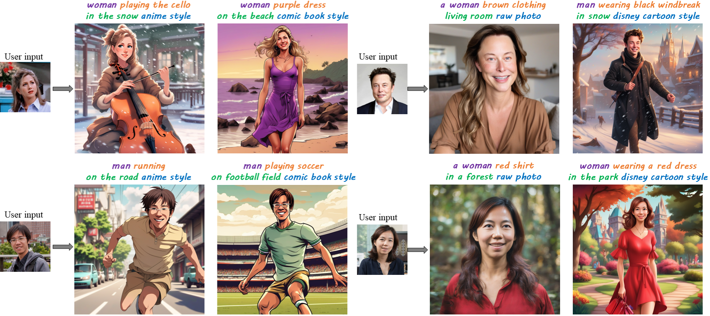

Infinite-ID: Identity-preserved Personalization via ID-semantics Decoupling Paradigm

Drawing on recent advancements in diffusion models for text-to-image generation, identity-preserved personalization has made significant progress in accurately capturing specific identities with just a single reference image. However, existing methods primarily integrate reference images within the text embedding space, leading to a complex entanglement of image and text information, which poses challenges for preserving both identity fidelity and semantic consistency. To tackle this challenge, we propose Infinite-ID, an ID-semantics decoupling paradigm for identity-preserved personalization. Specifically, we introduce identity-enhanced training, incorporating an additional image cross-attention module to capture sufficient ID information while deactivating the original text cross-attention module of the diffusion model. This ensures that the image stream faithfully represents the identity provided by the reference image while mitigating interference from textual input. Additionally, we introduce a feature interaction mechanism that combines a mixed attention module with an AdaIN-mean operation to seamlessly merge the two streams. This mechanism not only enhances the fidelity of identity and semantic consistency but also enables convenient control over the styles of the generated images. Extensive experimental results on both raw photo generation and style image generation demonstrate the superior performance of our proposed method.
We introduce our ID-semantics decoupling paradigm to effectively address the severe trade-off between high-fidelity identity and semantic consistency within identity-preserved personalization. Subsequently, we employ our mixed attention mechanism to seamlessly integrate ID information and semantic information within the diffusion model during the inference stage.
Results for raw photo generation. The demonstrate identites are ordinary people sampled from FFHQ dataset.

Results for style photo generation. The demonstrate identites are ordinary people sampled from FFHQ dataset.

When receiving multiple input ID images from different individuals, our method can mix these identities by stacking all the identity embeddings.

Linear interpolation of different identities.